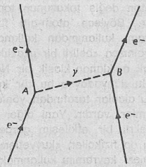
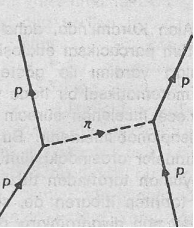
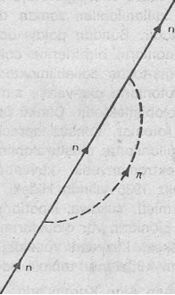
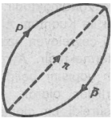

Klasik mekaniksel dünya görüşü, sert ve parçalanamaz parçacıkların bir boşluk içinde hareket ettikleri görüşüne dayanmaktaydı. Modern fizik ise, bu görüntüyü kökünden değiştirmiştir. Böylece yalnızca yeni bir «parçacık» yaklaşımı değil, aynı zamanda «boşluğun» klasik algılanışı da çok önemli bir biçimde farklılaştırıl m ıştır. Söz konusu değişimler, «Alan Kuramları» denilen yaklaşımlar sonucu ortaya atıla-bilmiştir. Bu gelişmelerin başında Einstein’ın; yerçekimsel alanı, uzayın geometrisi ile ilişkilendirme fikri yatmaktadır. Daha sonra Kuantum kuramı ile izafiyet 'kuramı da birleştirilerek, atom-altı parçacıkların kuvvet alanları açıklanmaya başlanınca, bu değişimler daha da önem kazanmışlardır. Bu «Kuantum Alan Kuramları»nda, parçacık ve parçacığı çevreleyen uzay, ilk dönemlerdeki kesin ayırımını yitirmekte ve boşluk da, çok önemli bir dinamik değer olarak karşımıza çıkmaktadır.
Aslında alan kavramı, on dokuzuncu yüzyılda Faraday ve Maxwell'in elektriksel yük ve akımlar arasındaki kuvvetleri açıklamaya çalışırlarken kullandıkları bir yaklaşımdır. Buna göre elektriksel alan, yüklü bir cismin çevresindeki uzayda oluşan bir durumdur. Bu uzayda bulunan ve bir yüke sahip olan herhangi diğer bir cisme de belirli bir kuvvetle etmektedir. Elektriksel alanlar yüklü (yani, elektriksel yük taşıyan) parçacıklarca oluşturulmakta ve yalnızca diğer yüklü parçacıklarca hissedilebilmektedirler. Manyetik alanlar ise, hareket halindeki yükler (yani, elektriksel akımlar) sayesinde meydana gelmektedirler. Bunun neticesinde ortaya çıkan manyetik kuvvetler de ancak hareket eden ve yüklü olan diğer cisimler tarafından hissedilecektir. Klasik elektro-dinamiksel alanda, yani Faraday ve Maxwell tarafından geliştirilen kuramsal yapıda, alanlar birincil fiziksel varlıklar olarak kabul edilmekte ve onlar bağımsız olarak (yani, maddesel cisimlerle aralarında bir ilişki kurulmadan) incelenebilmektedirler. Örneğin titreşen elektriksel ve manyetik alanlar, uzayda radyo dalgaları, ışık dalgaları ya da başka elektromanyetik dalgalar biçiminde hareket edebilmektedirler.
İzafiyet kuramı, yük ile akım ve elektrik ile manyetik alan kavramlarını birleştirerek, elektrodinamiğin yapısını enfes bir biçime sokmuştur. Tüm hareketler izafî olduğundan, her türlü yük, bir akım olarak da algılanabilmektedir (tabii bu arada içinde hareket ettiği referans sistemlini göz önünde tutarsak). Sonuç olarak, elektriksel alan, aynı anda bir manyetik alan da olabilmektedir. Elektrodinamiğin izafiyet formülasyonunda, böylece her iki alan tek bir elektromanyetik alan halinde birleştirilmiştir.
Alan kavramı yalnızca elektromanyetik kuvvetlerle sınırlı kalmamış, aynı zamanda büyük ölçekli dünyanın en önemli öteki kuvvetiyle, yani yerçekimsel kuvvetle de bir bağlantı içine sokulmuştur. Yerçekimsel alanlar bütün kütlesel cisimler ta rafından, oluşturulmakta ve yine onlar tarafından hissedilmektedir. Bunun sonucunda ortaya çıkan kuvvetler her zaman «çekicidir». Buna karşın elektromanyetik alanları yalnızca yüklü cisimlerce hissedilmekte ve hem «çekici», hem de «itici» bir karakter ortaya koymaktadırlar. Bu nedenle yerçekimsel alana uygun gelen tek alan kuramı Genel İzafiyet Kuramı'dır. Bu kuramda, kütlesel bir Cismin onu çevreleyen uzaya olan etkisi, yüklü bir cismin elektrodinamikte gösterdiği etkilerden daha büyüktür. Buradaki uzay da öyle «şartlandırılmıştır» ki, orada bulunan herhangi bir nesneye mutlaka bir kuvvet etki edecektir. Ayrıca bu şartlandırma uzayın geometrisini ve böylece onun yapısını da etkilemektedir.
Madde ve boş uzay (yani, dolu olan ve boş olan), Demokritus ve Newton atom anlayışına göre temelde iki ayrı kavramdır. Genel izafiyet Kuramı'nda ise, söz konusu iki kavram artık birbirinden ayrı olarak ifade edilememektedir. Yani nerede kütlesel bir cisim varsa, orada aynı zamanda bir de yerçekimsel bir alan oluşacak ve bu yerçekimsel kuvvetin belirişi de, söz konusu cismi çevreleyen uzayın eğikleşmesi biçiminde ortaya çıkacaktır. Fakat burada sözü edilen alanın, uzayı doldurup, onu bu şekilde eğdiği düşünülmemelidir. Çünkü bunların ikisi de aslında birbirinden ayrılamaz, yani alan, aynı zamanda eğik uzaydır! Genel izafiyet Kuramı'nda, yerçekimsel alan ve uzayın yapısı (ya da geometrisi) aslen özdeştir. Çünkü bunlar, Einstein’ın alan denklemlerinde aynı matematiksel değerlerle gösterilmektedirler. Buna göre Einstein’ın kuramında madde, kendi yerçekimsel alanından ayrılamaz ve yerçekimsel alan do eğik uzaydan ayırt edilemez. Böylece madde ve uzay birbirinden ayrılamamakta ve tek bir bütünün birbirine bağlı öğeleri olarak ifade edilmektedir.
Maddesel nesneler, kendi çevrelerindeki uzayın yapısını etkilerken, çevre de maddesel nesneleri önemli ölçüde etkilemektedir. Fizikçi ve filozof Ernst Mach'a göre, maddesel bir nesnenin ataleti (yani,nesnenin hareketlendirilmeye karşı gösterdiği direnci), maddenin içsel bir niteliği değil, yalnızca maddenin evrenin kalan diğer bölümleri ile girdiği etkileşimin bir ölçüsüdür. Mach'a göre madde, evrende madde bulunduğu sürece atalet gösterecektir. Bir cisim döndürüldüğünde, onun ataleti merkezkaç kuvvetlerin oluşmasına sebep olmaktadır (bu yöntemden, ıslak bir çamaşırı kurutmak için geliştirilen savurmalı çamaşır kurutma makinelerinde istifade edilmektedir). Ancak bu kuvvetler Mach'ın deyimi ile yalnızca «sabit yıldızlara izafî olarak» döndükleri için meydana gelmektedirler. Eğer sözü edilen sabit yıldızlar birdenbire yok olsalar, dönen cismin ataleti ve merkezkaç kuvveti de onlarla birlikte yok olur.
Mach'ın ilkesi olarak isimlendirilen bu atalet kavramı, Albert Einstein’ı da derinden etkilemiş ve onun Genel izafiyet Kuramı'nı oluşturmasına yol açan nedenlerden birisi olmuştur. Fakat Einstein kuramlarının matematiksel zorluğu nedeniyle fizikçiler henüz bu yapının, Mach'ın ilkesini doğrulayıp doğrulamadığına karar verememişlerdir. Buna rağmen fizikçilerin büyük bir çoğunluğu, o ya da bu yolla, iki modelin birleştirilerek bütünsel bir çekim kuramına ihtiyaç olduğunu savunmaktadırlar.
Böylece, bu sefer makroskopik düzeyde, modern fizik, bize maddesel nesnelerin ayrı varlıklar almadıklarını ve çevreleri ile ayrışmaz bir ilişki içinde bulunduklarını göstermiştir. Bunların özelliklerini, ancak ve ancak dünyanın geri kalan bölümü ile olan ilişkilerini göz önünde tutarsak anlayabiliriz. Mach ilkesine göre, bu etkileşim uzak yıldızlara ve galaksilere kadar bütün evreni içine almaktadır. Böylece kozmosun temel birliği kendisimi yalnızca çok küçüklerin dünyasında değil, aynı anda çok büyüklerin dünyasında da gösterebilmektedir. Bu olgu giderek, modern astrofizik ve kozmoloji dallarında destek görmekte ve doğrulanmaktadır. Astronom, Fred Hoyle bu konuda şu görüşü dile getirmektedir:
«Günümüzde kozmoloji dalında meydana gelen gelişmeler, günlük kural ve şartların evrenin uzak bölgeleri olmadan geçerli olamayacağını ve evrenin söz konusu uzak bölgelerinin ortadan kalkması halinde uzay ve geometri hakkında sahip olduğumuz bütün fikirlerin geçersiz olacağını hızla ortaya çıkarmışlardır. Günlük tecrübelerimiz, en küçük detaylarına kadar evrenin büyük ölçekli nitelikleri ile o kadar içli dışlıdırlar ki, onların ikisini birbirinden ayrı olarak düşünmek bile imkânsız bir hale gelmiştir» (1).
Genel izafiyet Kuramında, makroskopik ölçekte beliren maddesel nesne ile onun çevresi arasındaki birlik ve etkileşim, atom-altı düzeylerde daha da çarpıcı bir hal alır. Burada, klasik alan kuramının fikir ve görüşleri, atam-altı parçacıklar arasındaki etkileşimleri anlatabilmek üzere Kuantum kuramının fikir ve görüşleri ile birleşmişlerdir. Böyle bir birleşme, henüz yerçekimsel etkileşimler için ne yazık ki gerçekleştirilememiştir. Çünkü Einstein yerçekimsel kuramının anlaşılması zor matematiksel formu, buna büyük bir engel oluşturmaktadır. Ancak diğer kuramı (yani, klasik elektrodinamik kuramı) Kuantum kuramı ile birleştirilerek, «Kuantum elektrodinamiği» denilen yepyeni bir karam oluşturulmuştur. Bu yeni kuram, atom-altı parçacıkların elektromanyetik etkileşimlerini açıklamaya çalışan bir yapıdır. Bu kuram, ayrıca Kuantum kuramı ile izafiyet kuramını da birleştirmektedir. Böylece modern fiziğin ilk ve hâlâ da en başarılı «Kuantum-izafiyet» modeli geliştirilmiştir.
Kuantum elektrodinamiğinin en can alıcı özelliği, iki değişik kavramı birleştirmiş olmasında gizildir. Çünkü elektromanyetik alan kavramı ile elektromanyetik dalgaların parçacıksal belirişleri olan foton kavramını birleştirebilmiştir. Fotonlar aynı zamanda birer elektromanyetik dalga oldukları ve bu dalgalar da titreşen alanlardan meydana geldikleri için, fotonlar, öte yandan da birer elektromanyetik alan belirişi halindedirler. Böylece «Kuantum alanı» denilen yeni bir kavram ortaya çıkmıştır: Yani quanta ya da foton biçimi alabilen bir alan meydana getirilmiştir. Bu, gerçekten de bütün atom-altı parçacıklarını ve etkileşimlerini, her bir parçacığın farklı bir alana denk düşmesiyle açıklayabilen yepyeni bir kavram bütününü oluşturmaktadır. Söz konusu «Kuantum Alan Kuramı» ile sert parçacık ve onu çevreleyen uzay arasındaki klasik zıtlık, tamamen ortadan kaldı almıştır. Çünkü artık Kuantum alanı bir temel fiziksel varlık olarak algılanmakta, yani uzayın belirli bir yerinde varolan sürekli bir «aracı» (ya da aktarıcı) olarak görülmektedir. Parçacıklar ise, bu alanın bölgesel yoğunlaşmalarıdır. Yani gelip, giden ve bu arada da özgün karakterlerini yitiren ve ait oldukları alanda kaybolan enerji yoğunlaşmaları halindedirler. Albert Einstein’ın dediği gibi:
«Bundan dolayı maddeyi, alanın aşırı derecede yoğunlaştığı uzay bölgelerinden oluşan bir şey olarak algılayabiliriz. Söz konusu yeni fizik anlayışında hem alana ve hem de maddeye ayrı ayrı yer yoktur. Çünkü burada «alan» tek gerçekliktir» (2).
Fiziksel nesne ve fenomenleri, temel bir varlığa dayanan geçici belirişler olarak algılamak, yalnızca Kuantum Alan Kuramı’nın değil, aynı zamanda Doğu dünya görüşünün de ana öğesidir. Einstein'da olduğu gibi, Doğu mistikçileri de temel varlığı tek gerçeklik olarak değerlendirmektedirler. Bu varlığın tüm fenomenal belirişleri ise, geçici ve hayalî olarak addedilmektedir. Aslında Doğu mistikçilerinin bu gerçeklik anlayışı, yine de tam anlamıyla fizikçilerin Kuantum alanı olarak tanımlanamaz. Çünkü bu varlık, dünyadaki tüm fenomenlerin özü olarak görülmekte ve bunun bir sonucu olarak da, tüm kavram ve fikirlerin ötesinde yer almaktadır. Oysa Kuantum alanı, yalnızca bazı fiziksel fenomenlerde kullanılabilen ve tam olarak tanımlanmış (yani, açıklanmış) olan bir kavramdır. Buna rağmen fizikçi, atom-altı dünyayı Kuantum alan terimleri ile açıklayıp yorumlarken, sezgisel olarak; dünya ile ilgili tecrübeleri de yüce temel gerçekliği açıklamaya ve yorumlamaya çalışan bir Doğu mistikçisine çok yaklaşmaktadır. Alan kavramının ortaya çıkışından sonra fizikçiler, çok farklı ve çeşitli alanları tüm fiziksel fenomenleri kapsayacak tek bir temel alanda birleştirmeye çalışmışlardır. Özellikle Einstein, hayatının son yıllarını böyle bir birleştirilmiş genel alanı aramakla geçirmiştir. Ama belki de Hindu'ların Brahman'ı, Buddhistlerin Bharmakaya'sı ya da Taoist'lerin Tao'su nihaî olarak birleştirilmiş alan olarak değerlendirilebilir, kim bilir? Böylece bu alan, yalnızca fizik dalında incelenen fenomenleri kapsamayacak, aynı zamanda tüm diğer fenomenlerin oluşumuna da sebep olacaktır.
Doğudaki inanışa göre, bütün fenomenlerin temelinde oturan gerçeklik, tüm biçimlerin ötesindedir ve hiç bir açıklanmaya ya da somutlaştırmaya imkân tanımamaktadır. Bundan dolayı çoğunlukla biçimsiz, içsiz ya da boş gibi kelimelerle değerlendirilmektedir. Fakat bu içsizlik sade bir «hiçlik» olarak değerlendirilmemelidir. Bu aslında tam aksine, tüm biçimlerin özüdür ve bütün hayatın kaynağıdır. Bundan dolayı da Upanişad'larda şöyle yazar:
«Brahman hayattır. Brahman zevktir.
Brahman Boşluk'tur...
Zevk, aslında Boşlukla aynıdır.
Boşluk, aslında zevkin aynısıdır» (3).
Buddhist'ler en son gerçekliği «sunyata» (yani, içsizlik ya da boşluk) olarak isimlendirerek, aynı fikri paylaşmaktadırlar. Onlar, yaşayan Boşluk'un fenomenal dünyadaki tüm biçimlere hayat kazandırdığını düşünmektedirler. Öte yandan Taoistler de Tao'ya sonsuz ve bitişsiz bir yaratıcılığı yakıştırmakta ve ona «içsizlik» sıfatını uygun bulmaktadırlar. «Göğün Tao'su içsiz ve biçimsizdir»(4), der Kuan-tzu. Lao Tzu da bu içsizliği açıklayabilmek için çok sayıda benzetmeler kullanmaya çalışmıştır. Örneğin Tao'yu çoğu kez boş bir vadiye ya da sonsuz sayıda nesneleri içerebilen, ama yine de sonsuza dek boş olan bir kaba benzetmektedir.
Doğu'lu bilgelerin, «içsiz» ya da «boş» gibi terimler kullanmak yerine, Brahman, Sunyata ya da Tao gibi kelimeler kullanmalarının ardında, alışıldık içsizliğin dışında bir olgudan, sonsuz bir yaratıcılık kudretine sahip bir boşluktan söz etmek istemeleri saklıdır. Bundan dolayı Doğu mistikçilerinin kullandıkları «Boşluk» kavramı, rahatlıkla atom-altı fiziğindeki Kuantum alanı ile karşılaştırabilir. Çünkü Kuantum alanlarında olduğu gibi, bu «Boşluk» da, içerdiği sonsuz çeşitlilikteki biçimlere hayat kazandırmakta ve bazen de bu çeşitliliği yutmaktadır. Upanişad’larda da denildiği gibi:
«Sakince O'na dua edelim;
O'ndan oluştuğun için,
O'na geri döneceğin için,
O'nun nefesini içine çektiğin için» (5).
Mistik Boşluk'un fenomenal belirişleri, atom-altı parçacıklarda olduğu gibi durağan ve sürekli değil, dinamik ve geçicidir. Hiç durulmayan bir hareketle ve büyük bir enerji dansı ile var olmakta ve aynı anda da yok olmaktadır. Fizikçilerin atom-altı dünyasının olduğu gibi Doğu mistikçilerinin fenomenal dünyası da bir «samsara» yani sürekli doğumun ve ölümün dünyasıdır. «Boşluk»un geçici birer belirişleri olan bu dünyadaki bütün nesneler, hiç bir temel özgünlüğe sahip değildirler. Bu daha çok, maddesel özü reddeden ve sabit bir «benlik» tecrübesinin hayal olarak değerlendirildiği Buddhist felsefesinde özellikle vurgulanmıştır. Buddhist'ler, söz konusu maddesel öz ve özgün benlik hayalini, su parçacıklarının aşağı ve yukarı hareket etmeleri sonucunda, su tanesinin yüzeyin üzerinde hareket ediyormuş gibi görünmesine benzetmektedirler. Aynı analojiyi alan kuramı teorisinde fizikçilerin maddesel öz aldanmasını açıklamak üzere kullandıkları, çok ilginç bir gerçektir. Bu konuda Hermann Weyl şunları yazmaktadır:
«Maddenin alan kuramına göre, elektron benzeri bir maddesel parçacık, yalnızca elektriksel alanın küçük bir baskın noktasıdır. Bu baskın noktada, alan kuvveti çok yüksek değerlere ulaşmaktadır. Bu da bize, orada çok yüksek bir alan enerjisinin çok küçük bir uzay bölgesinde yoğunlaştığını göstermektedir. Böyle bir enerji düğümü, çevresindeki1 alan bölgesi ile kesin bir sınıra sahip olmamakla beraber boş uzayda, göl yüzeyinin üstünde hareket eden bir su dalgası gibi ilerlemektedir. Ancak bir elektronun ilk baştan beri tek bir özden meydana geldiğini iddia edemeyiz«(6).
Çin felsefesinde «alan» fikri, genel olarak Tao yaklaşımında görülmekte ve Tao biçimsiz ve içsiz olarak tanımlanmaktadır. Buna rağmen bütün biçimleri ortaya çıkarabilmekte ve bu yüzden de «ch'I» kavramıyla özdeş olmaktadır. Bu kavram, neredeyse tüm Çin doğa felsefesi okullarında önemli bir rol oynamakta ve Neo-Konfüçiyanizm ekolünde de dikkate değer bir anlam kazanmaktadır. Son belirtilen ekol aslında, Konfüçiyusçuluk'un, Buddhizm'in ve Taoizm'in büyük çaplı bir sentezidir. «Ch'i» kelimesi ise, sözlük anlamında «gaz» ya da «eter» demektir ve Çin'de evreni canlı tutan «hayatî nefes» ya da «hayatî enerji» olarak açıklanmıştır. İnsan bedenindeki «ch'i'nin yolları» ise, geleneksel Çin tıbbının temelini oluşturmuştur. Akupunkturun amacı da, ch'i'nin alkışını bu kanallar yardımı ile ayarlamaktadır. Ayrıca ch’i’nin akışı «Taoist Savaşçı Dansı» demek olan «T'ai Chi Ch'uan»ın akıcı hareketlerinin de temelidir.
Neo-Konfüçiyusçu’lar, modern fizik dalında kullanılan Kuantum alanı kavramına çarpıcı bir biçimde benzeyen bir ch'i yaklaşımı ortaya atmışlardır. Ch'i, bir Kuantum alanı gibi, maddenin zayıf ve hissedilemez bir biçimi olarak görülmekte ve uzayın içinde keyfî bir biçimde dağılmış olarak düşünülmektedir. Bu ch'i daha sonra, sert maddesel nesneleri oluşturmak üzere kendiliğinden yoğunlaşabilmektedir. Chang Tsai'nin sözleriyle:
«Ch'i yoğunlaştığında, görünebilir bir duruma gelmekte ve böylece nesnelerin biçimini oluşturmaktadır. Ortadan kalktığında ise, görünürlüğü yok olmakta ve oluşturduğu biçimler de kaybolmaktadır. Yoğunluğun belirli bir süre ise kısıtlı olduğu söylenebilir mi? Yok olduğunda ise, onun artık var olmadığı ileri sürülebilir mi?»(7).
Böylece ch'i, ritmik biçimde yoğunlaşmakta ve daha sonra yine yok olmaktadır. Bu şekilde «Boşluk»un tüm biçimleri yaratılmaktadır. Yine Chang Tsai'nin dediği gibi:
«Büyük Boşluk sadece ch'i'den meydana gelmiştir. Ch'i, yoğunlaşarak tüm nesnelerin biçimlerini meydana getirir. Bu nesneler ise, daha sonra tekrar yok olurlar ve böylece yine «Büyük Boşluk»u oluştururlar» (8).
Kuantum alan kuramında ise, ele alınan alan (ya da deyiniz ki, ch'i), yalnızca maddesel nesnelerin temel birimi olarak görülmektedir. Alanın oluşturduğu bütün karşılıklı etkileşimler ise, dalgalar biçimimde gerçekleşmektedir. Aşağıda aktardığım paragraflardan birincisi Walter Thirring'in modem fizik dalında geliştirmiş olduğu alan kavramı ile ilgilidir. Diğeri ise Joseph Needham'ın Çinli'lerin fiziksel dünya hakkındaki görüşlerini kapsayan fikirlerini içermektedir. Bu iki paragraf arasındaki benzerliğin ne kadar şaşırtıcı olduğunu siz de müşahade edeceksiniz:
«Modern kuramsal fizik, maddenin özü hakkındaki görüşlerimizi farklı bir duruma getirmiştir. Böylece dikkatimizi görünen varlıklardan (yani, parçacıklardan) bir temel varlığa, yani alana çevirmemize sebep olmuştur. Buna göre, maddenin var olması, yalnızca mükemmel alan durumunda meydana gelen bir bozulmanın neticesidir. Neredeyse küçük bir «leke» oluşmuştur demek geliyor içimden. Tabii buna bağlı olarak da elemanter parçacıklar arasında oluşan kuvvetleri açıklayan basit yasalar var olamayacaklardır. Yani düzen ve simetriyi, temel ve genel «alan»da aramalıyız»(9).
«Fiziksel evren ile ilgili eski çağdaki ve ortaçağdaki Çin görüşü, mükemmel ve sürekli bir bütünlük biçimindeydi. Elle dokunulabilen maddeler halinde yoğunlaşmış Ch'i'ye önem verilmezdi. Çünkü ayrı ayrı birer nesne halindeki dünya birimleri, burada diğer bütün nesnelerle belirli bir tepkimeye girerler. Bu, bir dalga halinde ya da bir titreşim şeklinde olabilir. Söz konusu hareket biçimi ise adeta Yin ve Yang diye anılan iki temel kuvvetin ritmik değişimi gibidir. Yani her bir nesne, içsel bir ritme sahiptir. Bunlar da, dünya ahenginin genel kalıbına dahildirler»(10).
Yüzyıllardır hararetle yapılan, «madde bölünemez atomlardan mı, yoksa bazı temel sürekliliklerden mi oluşur?» tartışması, modern fiziğin geliştirdiği Kuantum alanı kavramı ile hiç beklenmedik biçimde cevaplanmış oldu. Çünkü «alan», uzayın her yerinde mevcut olan bir sürekliliktir ve buna rağmen parçacık yönü ile, sürekli olmayan, yani «taneciksel» bir yapıya da sahiptir. Görünürde karşıt olan bu iki kavram böylece birleştirilmiş ve aynı gerçekliğin yalnızca iki farklı belirişi olarak değerlendirilmeye başlanmıştır. İzafiyet kuramında olduğu gibi, iki karşıt kavramın birleştirilmesi, dinamik bir biçimde olmuştur: Maddenin iki yönü, birbirini sonsuza dek değiştirmektedir. Doğu mistisizmi de buna benzer bir biçimde, «Boşluk» ile onun oluşturduğu biçimler arasındaki, dinamik birliği vurgulamıştır. Lama Govinda, bu konuda şunları yazmaktadır:
«Biçim ve Boşluk arasındaki ilişki, birbirlerini reddeden karşıtlıklar olarak değil, yalnızca var olan ve karşılıklı olarak çalışan bir gerçekliğin iki farklı belirişi şeklinde düşünülmelidir»(11).
Bu karşıt gibi görünen kavramların bir bütün oluşturacak biçimde kaynaştırılmış olması, bir Buddhist Sutra'da şu ünlü sözlerle anlatılmıştır:
«Biçim, boşluktur. Ve boşluk da gerçekten biçimdir. Boşluk, biçimden farklı değildir. Biçim de boşluktan farklı değildir. Biçim ne ise, boşluk da odur. Boşluk ne ise, biçim de odur»(12).
Modern fizik dalında ortaya çıkan alan kuramlar» yalnızca atom-altı parçacıklarla ilgili görüşlerimize yeni boyutlar kazandırmamış, aynı zamanda bu parçacıklar arasında cereyan eden kuvvetler hakkındaki yaklaşımlarımızı da derinden değiştirmiştir. Aslında alan kavramı, ilk önce kuvvet kavramı ile ilişkilendirilmişti. Daha sonra geliştirilen Kuantum Alan Kuramı'nda bile, parçacıklar arasında ortaya çıkan kuvvetler önemle dikkate alınmaktadır. Örneğin elektromanyetik bir alan, «serbest alan» olarak belirebilir (hareket eden dalga-fotonlar) ya da yüklü parçacıklar arasındaki kuvvet alanı olarak ortaya çıkabilir. Bu son durumda, kuvvet, etkileşen parçacıklar arasında gerçekleşen bir «foton alış-verişi» şeklinde kendini gösterir. Bu arada iki elektron arasında oluşan elektriksel itme de, yine söz konusu foton alış-verişi nedeniyle oluşmaktadır.
Kuvvet ile ilgili geliştirilen bu yeni yaklaşımın kavranması biraz zor görünse bile, foton alış-verişi sürecini bir uzay-zaman diyagramımda göstermek suretiyle, daha kolay anlaşılır kılınabilmektedir. Aşağıdaki diyagram, birbirine yaklaşan iki elektronu göstermektedir. Bunlardan birisi A noktasında bir foton yaymaktadır (y ile gösterilmiştir). Diğeri ise bu fotonu B noktasında emmektedir.

Elektron değiş-tokuşu aracılığı ile iki adet elektronun birbirini itmesi
Birinci elektron, fotonu yayınladığında, hareket yönünü ve hızını değiştirmektedir. Bu, dünya çizgisinde meydana gelen yön ve açı değişikliğinden de anlaşılabilir. Daha «sonra» fotonu emen ikinci elektron da, aynı etkiye maruz kalacaktır. Sonuç olarak her iki elektron da birbirlerinden uzaklaşacak ve foton alış-verişi suretiyle birbirlerini iteceklerdir. Elektronlar arasındaki tüm etkileşimler, bir seri foton alış-verişini kapsamaktadır ve bunun sonucu olarak da elektronlar, birbirlerini itiyorlarmış gibi gözükmektedirler.
Öte yandan klasik fizik kapsamında, elektronların birbirlerine bir çeşit «itici» kuvvet uyguladıkları söylenecektir. Fakat bunun, durumu açıklamakta çok yetersiz kaldığı hemen anlaşılmaktadır. Çünkü her iki elektrondan hiç biri, birbirlerine yaklaşırlarken bu kuvveti «hissetmemektedirler». Onların yaptıkları tek şey, alıp verilen foton yardımı ile belirli bir etkileşime uğramaktır. Söz konusu «kuvvet» ise, çok sayıda foton değiş tokuşunun toplam makroskopik etkisidir. Böylece atom-altı fiziğinde artık «kuvvet» kavramı kullanımdan kalkmaktadır. Buna göre kuvvet, yalnızca «belirli bir uzaklıkta hissedilen bir etki» olarak açıklanan klasik bir Newton kavramıdır. Atom-altı dünyadaysa bu tür kuvvetlere yer yoktur. Burada alanlar tarafından yönlendirilen parçacık etkileşimleri vardır. Yani diğer parçacıkların yardımı ile belirli bir etkileşim gerçekleşmektedir. Bundan dolayı da fizikçiler, «kuvvetler» yerine daha çok «etkileşimler» kavramını kullanmaktadırlar.
Kuantum Alan Kuramına göre, tüm etkileşimler, parçacık alış-verişi aracılığıyla oluşurlar. Örneğin elektromanyetik etkileşimde, fotonlar değiş-tokuş edilmektedir. Öte yandan nükleonlarda ise «şiddetli etkileşim» denilen çok daha güçlü bir çekirdeksel kuvvetin ortaya çıktığı gözlemlenmektedir. Söz konusu şiddetli etkileşim, «meson» olarak isimlendirilen yepyeni bir parçacık türünün alış-verişi ile sağlanmaktadır. Mesonlar, kendi aralarında çok farklı biçimlerde ortaya çıkmaktadırlar. Bu farklı biçimler, protonlarla nötronlar arasında değiş tokuş edilirler. Örneğin, nükleonlar birbirlerine ne kadar yakınlarsa, kendi aralarında alıp verdikleri mesonlar da o kadar çok ve ağır olmaktadır. Yani nükleonlar arasındaki etkileşimler, değiş-tokuş edilen mesonların özellikleri ile ilişkilidir ve bunlar da, kendi aralarında bir başka parçacık türünün alışverişi ile etkilenmektedirler. Bu nedenden dolayı, tüm atom-altı parçacıkların özelliklerini anlamadan, çekirdeksel kuvvetlerin temellerini anlamamız imkânsız gibi görünmektedir.
Kuantum Alan Kuramında, daha önce de gördüğümüz gibi, tüm parçacıksal etkileşimler, uzay-zaman diyagramları yardımı ile gösterilebilmektedir. Her diyagram, matematiksel bir ifade yardımı ile anlatılmakta, böylece incelenen sürecin meydana gelme olasılığı hesaplanabilmektedir. Bu diyagramlarla matematiksel ifadeler arasındaki ilintilik, 1949 yılında Richard Feynman tarafından titizlikle ortaya çıkartılmıştır. O tarihten itibaren de, söz konusu diyagramlara «Feynman diyagramları» denilmeye başlanmıştır. Bu kuramın en can alıcı noktalarından biri de, parçacıkların oluşmaları ve yok oluşları ile ilgilidir. Aşağıdaki diyagramda gösterilen foton, A noktasında gerçekleşen yayınlama süreci sırasında ortaya çıkmaktadır. B noktasında meydana gelen emilme süreci dahilinde de yok olmaktadır. Böyle bir süreç, yalnızca izafiyet kuramları çerçevesinde mümkün olabilmektedir Çünkü burada, parçacıklar bölünmesi imkânsız nesneler olarak değil, belirli bir enerji miktarı içeren dinamik kalıplar olarak görülmektedir. Bu enerji, eğer yeni kalıplar meydana geliyorsa, rahatlıkla yeniden dağıtılabilmektedir.
Maddesel parçacıkların oluşmaları, kendi kütlelerine denk düşen enerjinin bir çarpışma sürecinde hazır olması durumunda gerçekleşmektedir. Ancak «şiddetli etkileşimler» durumunda bu enerji her zaman sağlanamayabilir. Böyle hallerde, kütlesel mesonların alış-verişi imkânsız gibi görünmekte, fakat değiş tokuşlar, buna rağmen meydana gelmektedirler. Örneğin iki proton, kütlesi bir proton kütlesinin yedide biri kadar olan bir «pi meson»u ya da bir «pion» değiş-tokuş edebilirler.

İki adet proton (p) arasında oluşan pion () değiş-tokuşu
Böyle bir alış-veriş sürecinin oluşmasındaki neden, (mesonun ortaya çıkması için gerekli olan enerji miktarının var olmamasına rağmen), belirsizlik ilkesi ile ilgili olan bir «Kuantum olayına» dayanmaktadır. Daha önce de tartışıldığı gibi, çok kısa zaman dilimleri dahilinde meydana gelen atom-altı olaylar büyük bir enerji belirsizliği göstermektedirler. Mesonların değiş-tokuşu da (yani, onların oluşmaları ve daha sonra yok olmaları), bu türden bir olaydır. Bu olay çok kısa bir süre içinde cereyan etmekte ve böylece meydana gelen enerji belirsizliği, mesonların oluşabilmelerine imkân tanıyacak kadar büyük olmaktadır. Bu mesonlara, «sezilgen» (virtual) parçacık denir. Sezilgen mesonlar, çarpışma süreçleri dahilinde ortaya çıkan «gerçek» mesonlardan farklıdırlar. Çünkü bunlar, ancak belirsizlik ilkesinin sınırladığı bir zaman dilimi içinde var olabilmektedirler. Mesonlar ne kadar ağırlarsa (yani, onları oluşturmak için ne kadar fazla enerji gerekiyorsa), değiş -tokuş süresi için kullanılabilen zaman dilimi de o kadar kısa olmaktadır. Bundan dolayı da, ağır mesonlar ancak nükleonların birbirlerine çok yakın oldukları zaman değiş-tokuş edilebilmektedirler. Öte yandan sezilgen fotonların alış-verişi, sınırsız uzaklıklar için geçerli atabilmektedir. Çünkü bu durumda kütlesel olmayan fotonlar, sonsuz derecede küçük enerji miktarları kullanılarak oluşturulabilmektedirler. Çekirdeksel ve elektromanyetik kuvvetler ile ilgili yaptığımız bu analiz 1935 yılında Hideki Yakawa'ya önemli ipuçları vermişti. Yakawa, ispatlanmalarından daha on yıl önce, pionların var olduklarını öngörmüş ve ayrıca çekirdeksel kuvvetin yöneldiği hedeften dolayı da, pionların kütlelerini tahmin edebilmişti.
Böylece Kuantum Alan Kuramfnda, tüm etkileşimler, sezilgen parçacıkların alış-verişi olarak açıklanmaya başlanmıştır. Etkileşim ne kadar şiddetli ise, (yani, parçacıklar arasında cereyan eden «kuvvet» ne kadar büyükse), bu tür değiş-tokuş süreçlerinin oluşumu da o kadar mümkün hale gelmekte ve sezilen parçacıklar çok sayıda değiş-tokuş edilmektedirler. Ancak sezilgen parçacıkların görevleri, bu tür etkileşimlerle sınırlı değildir. Örneğin tek bir nükleon bile, kendi başına sezilgen bir parçacık yayınlayabilmekte ve hemen sonra onu emebilmektedir. Mesonun, belirsizlik ilkesinin belirlediği zaman dilimli içinde yok olduğunu kabul edersek, ortada böyle bir olayı engelleyecek hiç bir durum olmadığı görülmektedir. Aşağıdaki Feynman diyagramında, bir nötron, kendiliğinden bir pion yayınlamakta ve daha sonra da onu emmektedir.

Bir pionu (π) yayınlayan ve daha sonra onu emen bir nötron (n)
Böyle bir «kendi-etkileşim» sürecinin olasılığı, nükleonlardaki şiddetli etkileşimleri ispat edebilmekte olduğumuz için çok yüksektir. Bu da, nükleonların gerçekten de sezilgen parçacıkları sürekli olarak yayıp, emdikleri anlamına gelmektedir. Alan kuramına göre, bunlar, sezilgen parçacık bulutlarıyla çevrili, sürekli bir aktiviteye sahip odak noktalan olarak algılanmaktadırlar. Sezilgen mesonlar, ortaya çıktıktan hemen sonra yok olmakta, yani nükleonlardan pek uzaklaşamamaktadırlar. Demek ki burada meson bulutu çok küçük olacaktır. Bu bulutun dış bölgesinde hafif mesonlar bulunacak (çoğunlukla da pionlar), ağır mesonlar ise çok kısa bir süre içinde emildiklerinden, bulutun iç bölgesinde yer alacaklardır.
Bütün nükleonlar böyle sezilgen bir meson bulutu ile çevrilidir. Sezilgen mesonlar ise, olağanüstü 'kısa bir süre için var olup- yok olmaktadırlar. Fakat bazı özel şartlar altında, sezilgen mesonlar, gerçek mesonlara dönüşebilmektedirler. Çok yüksek bir hızla hareket eden bir parçacık, bir nükleona çarptığında, bu parçacığın sahip olduğu hareket enerjisinin bir bölümü, sezilgen mesona aktarı la bilmekte ve sezilgen mesonu içinde bulunduğu buluttan kurtarabilmektedir. Bu ise, yüksek enerji çarpışmalarında bir gerçek meson elde ediş yöntemidir. Öte yandan iki nükleon, sahip oldukları meson bulutlan kesişecek kadar yaklaşırlarsa bazı mesonlar onları oluşturan nükleonu terkedip, yani «öbür tarafa atlayarak», düğer nükleon un bulutuna dahil olabilir ve orada emilebilir. Bu durum, «şiddetli etkileşimler»in nasıl oluştuklarını ortaya koymaktadır.
Yukarıdaki açıklamalar bize, parçacıklar arasındaki etkileşimlerin ve buna bağlı olarak da onlar arasında oluşan «kuvvet»lerin, sezilgen bulutların oluşumuna bağlı olduğunu göstermektedir. Bir etkileşimin menzili (yani, etkileşimlin görüleceği parçacıklar arası uzaklık) ise, sezilgen bulutların büyüklüğüne bağlı olmaktadır. Etkileşimin detaylı biçimi de, bu bulutta bulunan parçacıkların özellikleriyle ilgilidir. Bundan dolayı «elektromanyetik kuvvetler», yüklü parçacıklar «içinde» bulunan sezilgen fotonlar nedeniyle; nükleonlar arasında ortaya çıkan «şiddetli etkileşimler» ise, nükleonların «içinde» bulunan pion ve diğer meson türleri nedeniyle meydana gelecektirler. Yani alan kuramında, parçacıklar arasındaki kuvvetler, o parçacığın içsel özellikleri olarak ortaya çıkacaktır. Böylece Newton atom anlayışındaki kesin «kuvvet ve madde» ayırımının, bizim «parçacık» olarak isimlendirdiğimiz «dinamik ve ortak bir kalıba sahip olan varlıklar» olarak anlaşılması gerektiği vurgulanmış olmaktadır.
Kuvvetlerle ilgili bu görüş, Doğu mistisizminde de vardır. Burada, hareket ve değişim, tüm nesnelerin içsel ve önemli özellikleri olarak kabul edilmektedir. «Dönen her şey», der Chang Tsai, «spontane (kendiliğinden) bir kuvvete sahiptir ve bundan dolayı da kendi hareketleri, dış etkilerden kaynaklanmamaktadır.» (13)
I Ching'de ise şunları okumaktayız:
«(Doğal) Yasalar, nesnelerin dışındaki kuvvetleri değil, nesnelerin içindeki hareket uyumluluğunu temsil etmektedirler.» (14)
Kuvvet ile ilgili bu eski Çin sözleri, Kuantum Alan Kuramı ışığı altında bakıldığında, doğru ve geçerli gibi gözükmektedir. Çünkü burada da, parçacıklar arasındaki kuvvetler, kendi içlerindeki dinamik kalıpları (yani, sezilgen bulutları) yansıtmaktadırlar.
Modern fizik dalındaki alan kuramları, bizi, maddesel parçacıklar ve boşluk arasındaki klasik ayırımı ortadan kaldırmaya zorlamaktadır. Einstein’ın yerçekimsel alan kuramı ile Kuantum Alan Kuramı, parçacıkların, kendilerini çevreleyen uzaydan ayrı düşünülemeyeceğini göstermektedir. Ayrıca bu parçacıklar bir yandan uzayın yapısını belirlerken, öte yandan da yalıtılmış varlıklar olarak değil, uzayın her yerinde bulunan sürekli, bir alanın bölgesel yoğunlaşması olarak ele alınmaktadırlar. Kuantum Alan Kuramfnda, bu alanın, tüm parçacıkların ve bunların arasındaki etkileşimlerin temeli olduğu öngörülmektedir.
«Bu alan her yerde ve her zaman vardır. Hiç bir zaman da ortadan kaldırılamaz. Sözü edilen alan, tüm maddesel fenomenlerin taşıyıcısıdır. Bu, protonun, pi mesonu içinden çıkardığı «boşluk»tur. Parçacıkların oluşmaları ve yok oluşları bu alandaki hareket dalgalanmalarını yansıtmaktadır.» (15)
Sezilgen parçacıkların kendiliğinden ve bir boşluktan ortaya çıkmaları ve hemen sonra da yeniden yok olmaları ve bu olayın da hiçbir nükleon ya da şiddetli bir biçimde etkileşen parçacık olmadan kendiliğinden gerçekleşebilmesi, madde ve boş uzay arasındaki ayırımın artık bütünü ile ortadan kalkmasına neden olmuştur. Aşağıda böyle bir sürecin «vakum diyagramı» çıkartılmıştır: Üç adet parçacık (bir proton (p), bir karşıt-proton (p- )ve pion (π) boşluktan ortaya çıkmakta ve yine boşluğa geri dönmektedir. Alan kuramına göre bu tür olaylar sürekli olarak gerçekleşmektedirler. Yeni vakum, boş olmaktan çok uzaktır. Tam aksine, hiç tükenmeyen bir zincir gibi yaratılıp yok olan sayısız parçacıklarla doludur.

Bir vakum diyagramı
İşte bu noktada, modern fizik ile Doğu mistisizmindeki «Boşluk» yaklaşımı arasındaki en büyük paralellik ortaya çıkmaktadır. Doğu'daki «Boşluk» gibi, «fiziksel vakum» da bir birşey olmama durumunu değil, aksine, parçacık dünyasındaki tüm biçimlerin (kendiliğinden) yaratılabilirliğini temsil etmektedir. Bu biçimler ise; bağımsız birer varlık değil, genel «Boşluk»un geçici belirişleri olarak değerlendirilmelidir. Sutra'larda denildiği gibi: «Biçim boşluktur ve boşluk da biçimdir.»
Sezilgen parçacıklar ile vakum arasındaki ilişki, temelde dinamiktir. Yani vakuum gerçek bir «Canlı Boşluk»tur. Bu «Canlı Boşluk», yaratılış ve yok oluşun sonsuz ritmine göre artmaktadır. Vakuumun dinamik niteliğinin keşfedilmesi, bir çok fizikçiye göre, modern bilimin en önemli buluşudur. Artık boşluk, fiziksel fenomenleri taşıyan boş bir kap olmaktan çıkarılmış, çok önemli boyutlara sahip olan dinamik bir çokluk haline gelmiştir. Yani modern fiziğin sonuçları ünlü Çin bilgini Chang Tsai'nin sözlerini doğrular gibidir:
«Büyük Boşluk’un ch'i ile dolu olduğunu kavrayan birisi, yokluk diye bir durumum var olmadığını da idrak eder.» (16)